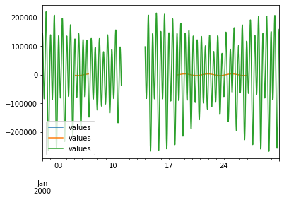

Sample Series¶
[1]:
import numpy as np
import pandas as pd
import matplotlib.pyplot as plt
import scipy.special as ss
from vtools.functions.filter import butterworth,cosine_lanczos
[2]:
# Frequency, amplitude, phase of semidiurnal tide
# elev_tide = {
# "O1": (6.759775e-05 ,0.755 ,96.),\
# "K1": (7.292117e-05,1.2,105.),\
# "Q1": (6.495457e-05,1.15212,282.20352),\
# "P1": (7.251056e-05, 0.99465 ,40.40973),\
# "M2": (1.405189e-04,1.89,336.),\
# "S2": (1.454441e-04,0.449,336.)}
[3]:
def interval(ts):
"""Sampling interval of series"""
return ts.index.frequency
[4]:
def bessel_df():
""" Sample series with bessel function signals"""
numpoints = 100000
date_rng1 = pd.date_range(
start='1992-03-07', periods=numpoints, freq='15min')
date_rng2 = pd.date_range(
start='1992-03-07', periods=numpoints, freq='15min')
x = np.linspace(-5, 85, numpoints)
df0 = pd.DataFrame(index=date_rng1, columns=['date'])
df0['data'] = ss.jn(2, x)
df1 = pd.DataFrame(index=date_rng2, columns=['one', 'two'])
df1['one'] = ss.jn(2, x)
df1['two'] = ss.jn(3, x)
df2 = pd.DataFrame(index=date_rng2, columns=['data'])
df2["data"] = ss.jn(4, x)
return (df0, df1, df2)
[5]:
def jay_flinchem_chirptest(c1=3.5, c2=5.5, c3=0.0002, c4=6.75):
""" Approximation of the signal from Jay and Flinchem 1999
A comparison of methods for analysis of tidal records containing multi-scale non-tidal background energy
that has a small tide with noisy, river-influenced amplitude and subtide"""
c1 = 3.5
c2 = 5.5
c3 = 0.0002
c4 *= 2.*np.pi
nval = 51*24
omega = np.array([1., 2., 3., 4])
gamma = np.array([40., 40., 30., 90.])*2.*np.pi/360.
t = np.linspace(-42, 8., nval)
tnorm = t*2.*np.pi
ai, aip, bi, bip = ss.airy(-c3*np.square(tnorm-c4))
Qr = c1 + c2*ai
A = np.array([0.5, 1., 0.25, 0.1])
Aj0 = A*1.
Aj1 = np.array([0.4, 0.4, 0.4, 0.4])*.97
D = np.zeros_like(t)
for i in range(4):
j = i+1
phij = gamma[i]*np.sqrt(Qr-1)
#print("phi {}".format(phij))
Aj = Aj0[i]*(1.-Aj1[i]*np.sqrt(Qr))
D += Aj*np.cos(tnorm*omega[i]-phij)
dr = pd.date_range('2000-01-01', periods=nval, freq='H')
return pd.DataFrame({"data": (D+Qr), "D": D, "Qr": Qr}, index=dr)
[6]:
def small_subtide(subtide_scale=0., add_nan=False):
"""Inspired by large tidal flow with small Qr undercurrent with 72hr period
This is a tough lowpass filtering job because the diurnal band is large and
must be supressed in order to see the more subtle subtidal amplitude"""
freqmult = np.pi/180./3600. # converts cycles/hour to rad/sec
discharge_tide = {
"O1": (13.943035*freqmult, 0.5*0.755, 96),
"K1": (15.041069*freqmult, 0.5*1.2, 105.),
"M2": (28.984104*freqmult, 0.75*1.89, 336.),
"S2": (30.*freqmult, 0.75*0.449, 336.)}
month_nsec = 30*86400
t = np.arange(0, month_nsec, 900)
nsample = len(t)
nanstart = nsample//3
numnan = nsample//10
FLOW_SCALE = 100000.
tide = t*0.
for key, (freq, amp, phase) in discharge_tide.items():
print(key, freq, amp, phase)
tide += FLOW_SCALE*amp*np.cos(freq*t-phase*np.pi/180.)
subtide_freq = 2.*np.pi/(3.*86400.) # one cycle per 3 days
# Add a subtide that is very small compared to the tidal amplitude
tide += subtide_scale*FLOW_SCALE*np.cos(subtide_freq*t)
tide[nanstart:(nanstart+numnan)] = np.nan
dr = pd.date_range(start="2000-01-01", periods=nsample, freq="15min")
return pd.DataFrame({"values": tide}, dr)
[7]:
def extra():
fig, ax0 = plt.subplots(1)
ts.plot(ax=ax0)
plt.show()
jf = jay_flinchem_chirptest()
fig, ax0 = plt.subplots(1)
jf.data.plot(ax=ax0)
plt.show()
(df0, df1, df2) = create_sample_df()
fig, ax0 = plt.subplots(1)
df1.plot(ax=ax0)
df2.plot(ax=ax0)
[8]:
ts = small_subtide(subtide_scale=0.03, add_nan=True)
cutoff = pd.tseries.frequencies.Hour(40)
filtered0 = butterworth(ts, cutoff, order=8)
filtered1 = cosine_lanczos(ts, cutoff)
fig, ax0 = plt.subplots(1)
filtered0.plot(ax=ax0)
filtered1.plot(ax=ax0)
ts.plot(ax=ax0)
plt.show()
print(type(ts.index.freq))
O1 6.7597741241891e-05 0.3775 96
K1 7.292116029712528e-05 0.6 105.0
M2 0.00014051890153901625 1.4175 336.0
S2 0.0001454441043328608 0.33675 336.0

<class 'pandas.tseries.offsets.Minute'>
[ ]: